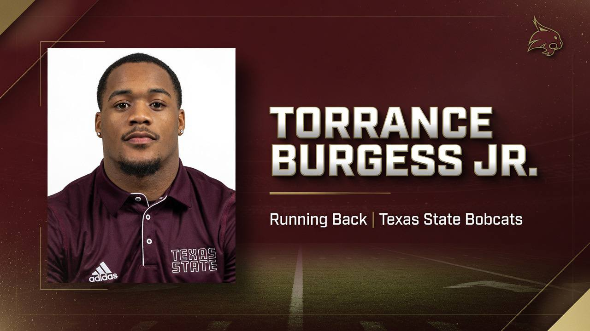

The internet is not okay this morning. And according to Texas State Bobcats head coach Alex Jones, that is exactly what the globalists get for underestimating a 5-foot-8 senior running back from Pearland, Texas.
Footage surfaced overnight of Bobcats safety-valve Torrance Burgess Jr. (81 OVR) at what witnesses are calling "the largest, most patriotic offseason party in San Marcos history" — an event at which the young man reportedly violated an ungodly, unquantifiable number of beers. The clip has since crashed three separate engagement dashboards. Social media, as an institution, has quietly filed for Chapter 11.
"FOLKS. FOLKS. Look at that FORM," Jones roared from behind the INFOWARS Football desk, an eagle circling somewhere off-camera. "They want you to think this is a PROBLEM. They want you clutching your PEARLS. But what you just watched is a 21-year-old American athlete DEMONSTRATING peak hydration protocol under maximum social pressure. That is not partying. That is TRAINING. That is a psy-op AGAINST the fatigue that the deep state installs in your muscle fibers."
"He Broke the Algorithm — And That's a Good Thing"
Analytics teams across at least four platforms confirmed catastrophic system failure. The video generated so much engagement that automated moderation bots reportedly began "asking questions no bot is supposed to ask." One dashboard simply displayed the word "why" and shut down.
"You know who ELSE breaks systems, folks? FREE MEN," Jones bellowed, holding a jar of victory supplements aloft. "The mainstream media wants a running back who stays quiet, who stays DOCILE, who sips one lukewarm light beer and goes to bed at 9 p.m. like a GLOBALIST. Not my guy. My guy looked at the algorithm and said 'not today, swamp thing.'"

Coach Jones Sounds the Alarm (Affectionately)
In classic Bobcats fashion, Jones pivoted mid-rant from raw admiration to genuine terror — because Burgess Jr. remains one of only three running backs on the entire Texas State roster.
"Here's what SCARES me, folks," Jones whispered, leaning into the camera. "That man is ONE of THREE. THREE running backs! And he's out there violating beers like he's got a 14-deep depth chart behind him?! We are ONE hamstring — one KIDNEY — away from the ABYSS. I love the fire. I LOVE the freedom. But I need those carbs stored as GLYCOGEN, son, not exhaled onto a stranger's phone camera at 2 a.m.!"
"I am not mad. I am TERRIFIED, and I am PROUD, and those are the same emotion when you only have three running backs."— Alex Jones
Jones confirmed the sideline "filtered spring water IVs" he installed for Burgess Jr. during the preview presser would now be "supplemented with electrolytes and a stern talking-to." He declined to elaborate on the talking-to.
Teammates React
QB1 Brad Jackson — the $0-NIL patriot — reportedly watched the clip in silence, nodded once, and returned to his film study. Lockdown corner Brent Gordon Jr. (88 OVR) issued a single statement: "Robbers respect a man who commits."
Press Conference Transcript
Q: Coach, is Torrance Burgess Jr. going to be disciplined for the video?
"Disciplined? For HYDRATING? For achieving virality the FOUNDING FATHERS could only DREAM of? No. He'll run the ball 40 times a game and he'll like it. That's the discipline. That's the punishment AND the reward. Next question."
Q: How many beers did he actually violate?
"The number is classified. Not by ME — by GOD. We tried to count. The abacus caught fire, folks. The spreadsheet returned an error. Some numbers, the human mind was not meant to hold."
Q: Are you worried this reflects on the program?
"It reflects PERFECTLY on the program. We are undermanned, underfunded, and UNAFRAID — and now, apparently, UNMATCHED at the keg. Texas State Bobcats. Remember the name. The bartenders already do."
The Verdict
Is it a scandal? Is it a triumph? Is it a full-blown constitutional crisis for the concept of the "like" button? According to Alex Jones, it is all three, simultaneously, and it is beautiful. Torrance Burgess Jr. walked into a party as a role-player running back and walked out as a folk hero — assuming he can still walk.
"They wrote us off. They wrote HIM off. Good," Jones declared as the eagle finally took flight and the stream neared hour four. "That's when the resistance does its best work. Feed Torrance. Hydrate Torrance responsibly. And for the love of everything, someone RECRUIT a fourth running back before this man violates the entire Sun Belt Conference."
Kickoff can't come soon enough. Social media, presumably, still won't see it coming. 🏈🦅🍺